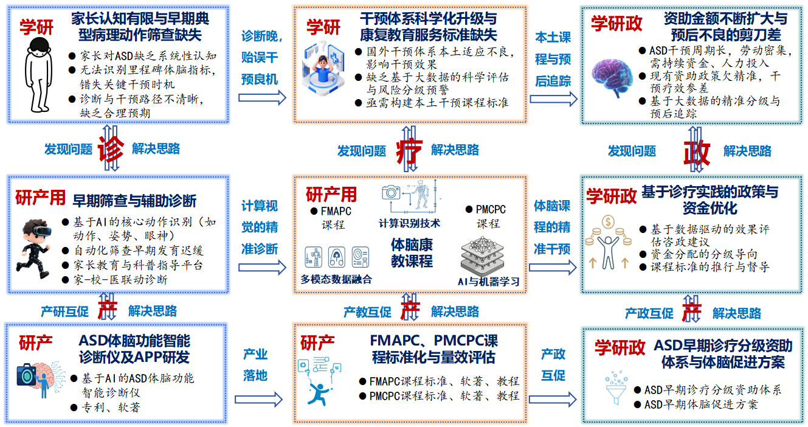
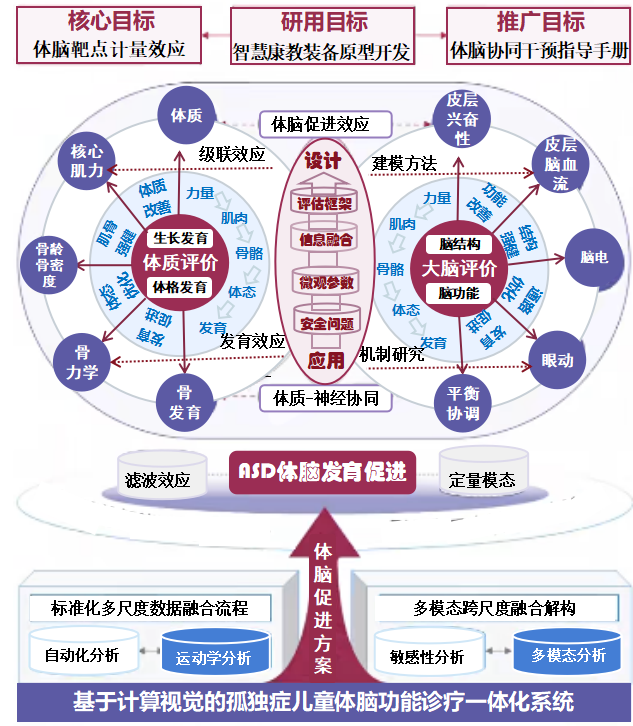
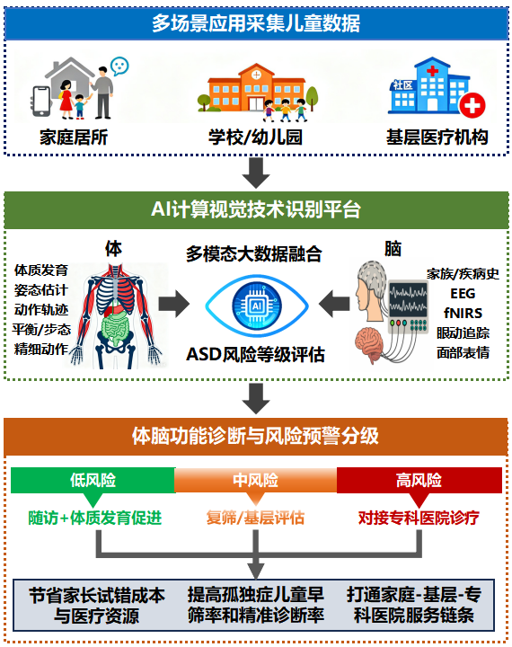

识别太晚
家长早期识别和基层辅助诊断工具不足，儿童容易错过体脑发育敏感期。
家长早期识别和基层辅助诊断工具不足，儿童容易错过体脑发育敏感期。
课程缺少体脑协同量化支撑，难以匹配儿童动作技能、脑功能和生活能力差异。
家庭、学校、基层、专科医院之间缺少统一数据链路，评估与转诊效率不足。
平台围绕智能诊断仪和云端评估系统，把多模态采集结果转化为风险分级、个性化课程处方和长期追踪报告。
01 / 04
通过短视频动作捕捉、眼动追踪与基础问卷，在家庭、幼儿园和基层机构完成初筛；系统自动生成低、中、高风险分级，并给出转诊与随访建议。
系统面向不同角色给出不同工作台，保证采集、解读、训练与转诊都能被记录和追踪。
智能诊断仪采集的数据驱动课程个性化，课程实施反馈再反向优化模型和产品，最终沉淀为可复制的“北京样板”。
采集动作、脑功能、注视与行为表现，支持家庭和机构多端输入。
输出风险分级、能力画像与标准化评估报告，辅助医生和康复师决策。
把评估结果转化为精细运动、体能里程碑和生活能力训练处方。
通过随访和量效评估持续优化训练推荐、课程标准与政策建议。
以下图谱来自项目材料，页面保留其核心逻辑，并用网页结构重新组织为产品展示。



VMC端到端延迟
异常动作识别准确率
年服务儿童人次目标
新增合作企业目标
以核心技术攻关、示范中心建设和产品量产推广为主线，让研发、康复服务与产业转化同步推进。
完成技术需求调研、姿势估计系统、自动化评估流程和核心专利申报。
完成工艺优化、示范中心建设、闭环效果评估和首批销售/授权协议。
扩大京津冀合作机构，推进全国市场投放，形成可复制推广手册。
这版网页已经覆盖产品展示。如果继续深化，可以把平台预览扩展成家长端、康复师端、医生端三套可点击页面。